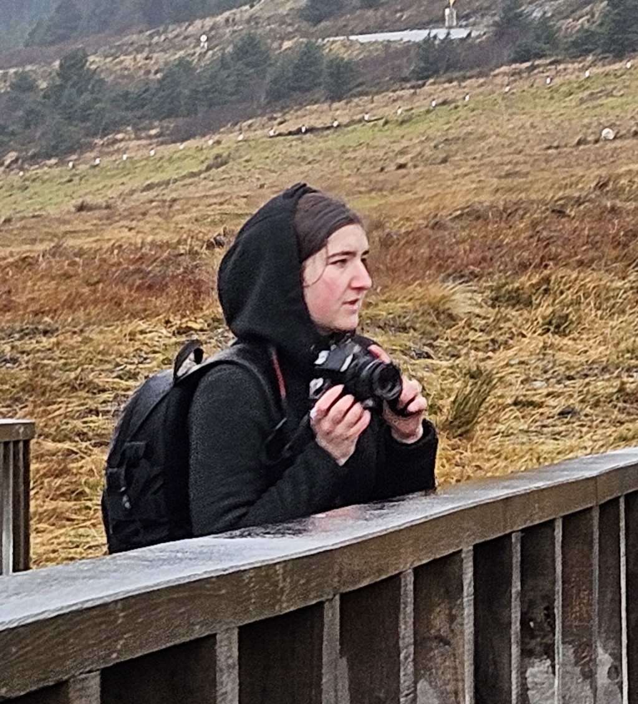

Nature's Beauty in the World and People
Welcome to Timeless Views, where Arica specialize in capturing the beauty of nature. People's most precious moments are enjoying milestones in that nature. We would love to ensure that these special moments last forever.
- Wide variety of nature photos to browse
- Amazing photo sessions for individuals, families, and couples
- Event photography for sport events, weddings, senior photos, and any special milestone
- Outdoor settings to fit your personality or has a special meaning
- Create a travel bucket list with photos you love
About the Photographer
The photographer, Arica, has a passion for nature and photography. She has traveled to many places throughout the United States to capture the beauty of nature and the special moments of people. She has been photographing for 6 years with a focus on nature. When she moved to Wisconsin, the high school was in need of a photographer and that is when she started photographing events, people, and milestones. She has learned to combine the need and the nature to create beautiful photographs.